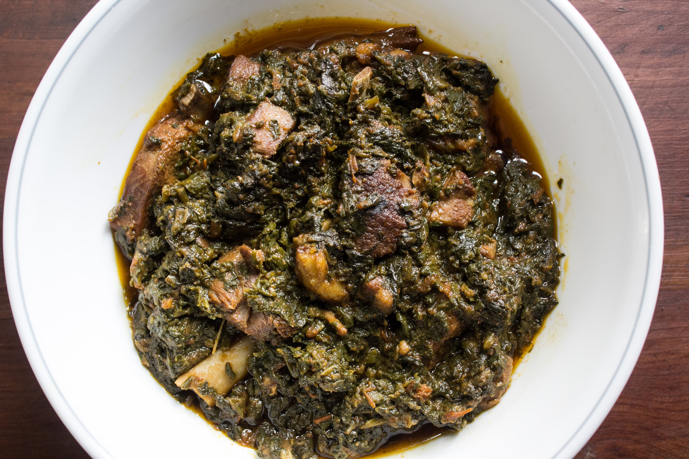

Palak Gosht

Description
Palak gosht is a popular curry made with lamb lathered in a spicy spinach masala.
A delicious comfort food served with chapattis, paratha, or naan.
Ingredients
- Meat
- Spinach
- Aromatic Spices
- Ginger and Garlic
- Tomatoes
- Green Chillies
Steps
- Add the oil in pan and heat up until hot then add the onions and cook on medium heat for 4-5 minutes until softened
- Add the cumin seeds, finely chopped garlic cloves, and green chilies then cook for 2-3 minutes
- Add the chopped tomatoes and cook for 3-4 minutes until softened
- Add the lamb or mutton and give everything a stir before covering and cook for 15 minutes, ensuring that you stir every few minutes
- Add the salt, chilli powder, turmeric powder, and coriander powder then cook the spices for 4-5 minutes
- As the spices are cooking finely chop the spinach then add into the pan and cover and cook for 5 minutes until the water is released
- Remove the lid and mix before covering and cook for 20 minutes
- Add the dried fenugreek and mix
- Serve with chapatti and enjoy!